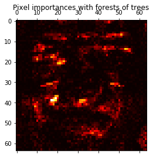

Distributed Joblib¶
Scikit-learn already parallelizes many algorithms internally using
joblib. You can schedule these to run on a distributed cluster using
dask.distributed, which register’s a plugin with joblib.
Parts of this example are taken from https://github.com/ogrisel/parallel_ml_tutorial/blob/master/notebooks/06%20-%20Distributed%20Model%20Selection%20and%20Assessment.ipynb
In [1]:
from time import time
import matplotlib.pyplot as plt
from sklearn.datasets import fetch_olivetti_faces
from sklearn.ensemble import ExtraTreesClassifier
from sklearn.externals import joblib
import distributed.joblib
from distributed import Client
As usual, we connect to our client. Typically you would be the address for your scheduler here.
In [2]:
client = Client()
Let’s load the data as usual.
In [3]:
# Load the faces dataset
data = fetch_olivetti_faces()
X = data.images.reshape((len(data.images), -1))
y = data.target
mask = y < 5 # Limit to 5 classes
X = X[mask]
y = y[mask]
And create the classifier.
In [4]:
forest = ExtraTreesClassifier(n_estimators=1000,
max_features=128,
n_jobs=-1,
random_state=0)
And now we fit the model. The actual fitting step is the usual
forest.fit(X, y). To use our cluster, we’ll use the
joblib.parallel_backend context manager.
In [6]:
# Build a forest and compute the pixel importances
t0 = time()
with joblib.parallel_backend('dask.distributed', scheduler_host=client.scheduler.address):
forest.fit(X, y)
print("done in %0.3fs" % (time() - t0))
done in 1.106s
In [7]:
importances = forest.feature_importances_
importances = importances.reshape(data.images[0].shape)
# Plot pixel importances
plt.matshow(importances, cmap=plt.cm.hot)
plt.title("Pixel importances with forests of trees")
plt.show()
